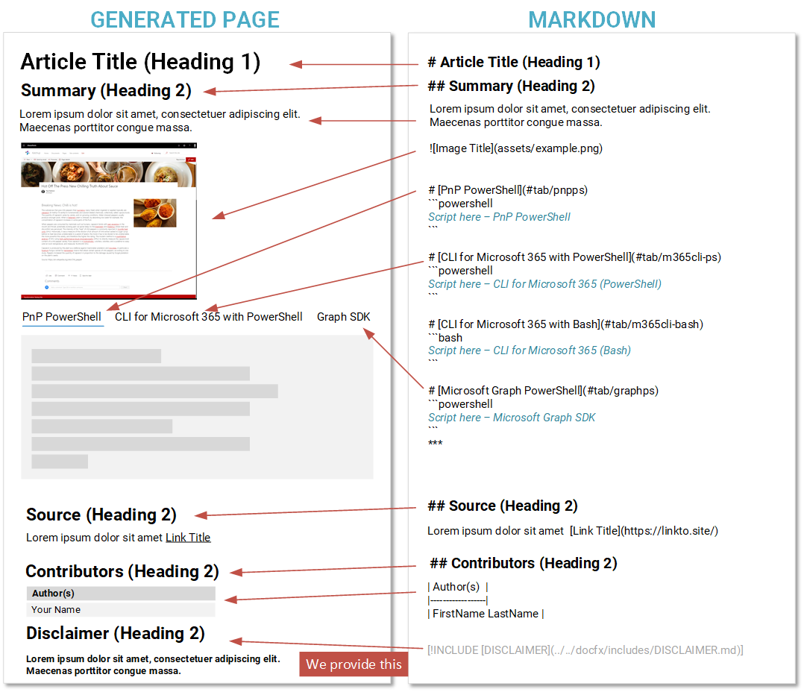
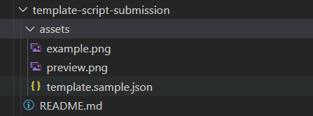

Preparing a submission
Thank you for considering contributing to this repository. In order to help you get started, we have prepared this guide to provide you with the information you need to prepare your submission.
Markdown
This repository uses a text based markup called "Markdown" which allows you to write articles/pages quickly without having to worry about the presentation of the page. Even this page is written using this - we use a site generator to turn this into a page automatically.
If you want to learn more about Markdown checkout this guide by Bob German on Tech Community - What's up with Markdown?
Key elements of Markdown we use
# Heading 1
## Heading 2
### Heading 3
| Table Header |
|--------------|
| Table Data |
[Hyperlink](https://bing.co.uk)

Page Structure
The page follows a standard format, we have created a graphic to explain the layout and the markdown for each section:

The minimum we need for the submission is:
- Article Title - the title for your script
- Summary - for briefly describing what the script does
- Image, ideally named "example.png" in an assets folder, presenting the end result of the operation. The more visual the better.
- Script - minimum of at least one type. We support: PnP PowerShell, Microsoft 365 CLI, Graph PowerShell SDK, SPO PowerShell, if there are other types you wish to include, please raise an issue, we may need to tweak the site to accommodate the library.
- Contributors - your name, or if a joint submission those you have worked with - so that we can attribute credit for the submission.
We add the disclaimer statement at the bottom.
Submission Template Files
There is a template submission folder called "template-script-submission" in template-script-submission | GitHub - PnP Script Samples.
Before you can submit, you need to make sure you are setup with a "fork" of the repository in your own account, please navigate to Submitting Pull Requests for setup information.
The template submission folder contains:
- README.md - Sample Readme with the structure, remove the dummy text and update the areas for your submission
- assets/example.png - image for the sample, simply replace with a screenshot to show in the article
Optional files
- assets/template.sample.json - this is a metadata file used for the gallery views, this is optional DO NOT HAVE TO COMPLETE THIS
- assets/preview.png - we generate a preview from the example.png file, you do not have to update this.
Folder Structure
We have worked to keep the folder structure lean and as simple as possible when submitting scripts:
+--- script-folder-title - *folder for the script based on the title of your sample, please all lowercase and spaces as hyphens*
|___ assets - *sub folder for any images or assets you need to support your sample*
